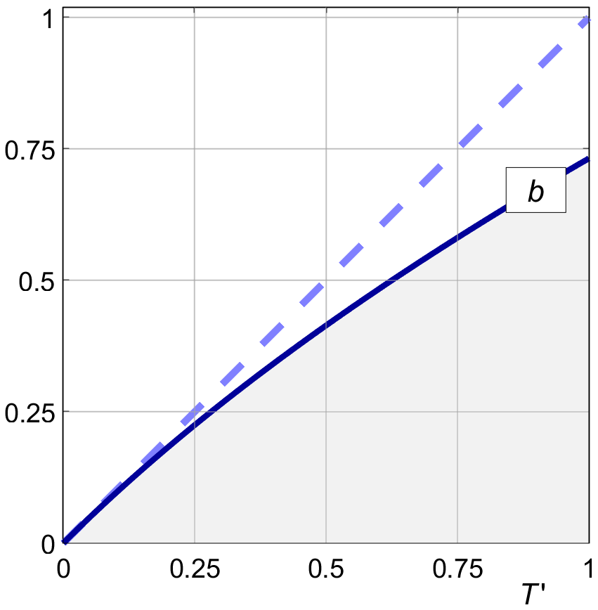

AXIAL MOMENTUM
TBW.
XXXXXXXXXXXXXXXXXXXXXXXXXXXXXXXX
If we drop the light loading assumption we have :
| (6.11) |
These are the values for uniform induction b
and a fully filled flow tube π R2.
We will see later that b may vary over the prop disk,
for instance for rotational optimization,
and m ′ may not fill the whole flow tube,
due to tip loss.
XXXXXXXXXXXXXXXXXXXXXXXXXXXXXXXXXXX
Airplane propellers have relatively small induction ratios in cruising flight, typically on the order of b = 0.1 like in our running numerical example. Our equations, starting with (6.11) and followed by many, will stay much simpler if we assume ½ b ≪ 1 and therefore ( 1 + a ) ≅ 1. It is common to develop the theory under this so-called "light loading assumption".
We briefly touch on the general case of "heavy" loading. We can solve (6.11) for b by writing it as a quadratic :
| (6.14) |
Solving the quadratic gives one positive solution :
| (6.15) |
Figure 6.1 shows this relation. For a given induction ratio and efficiency, the contraction of the flow tube draws more air through the prop disk. This increases the thrust at the same efficiency, which gives the propeller a slight advantage. If desired, we can correct our calculations for the contraction by iteratively adapting the radius R of the propeller to a slightly larger value, by a factor of ( 1 + ½ b ).
Strictly, we should carry the ( 1 + ½ b ) term right through all of our calculations, including the derivatives in the rotational optimization. This is not hard to do, but the small increase in accuracy for heavy loading does not outweigh the added complexity of the equations obscuring our intuitive understanding.
We will stay with the light loading assumption, mainly because it keeps the central arguments easier to follow.

Figure 6.1 : Axial induction ratio b versus T ′.